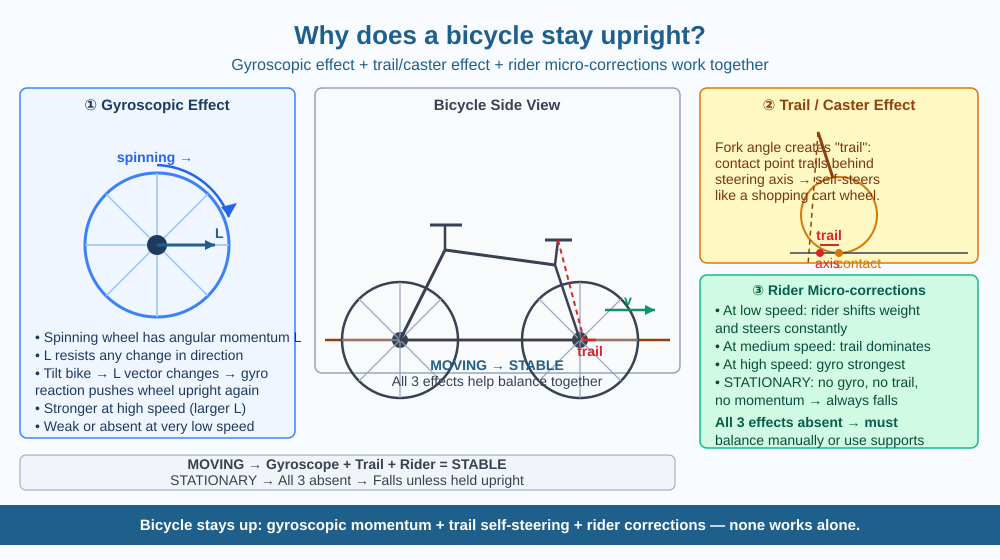

By the end of this lesson, you should be able to name the two main physical effects that keep a moving bicycle balanced, explain why a stationary bicycle falls over, and predict whether a slow or fast bicycle is more stable.
A bicycle with two thin wheels in a straight line seems impossibly unstable — yet millions of people ride them safely. A parked bicycle falls over in seconds without a stand. But a moving bicycle stays upright with no difficulty. What changes when the wheels start spinning? And why is it harder to balance when cycling very slowly?
Keeping a moving bicycle upright involves two physical effects working together.
Effect 1 — The gyroscopic effect. When a bicycle wheel spins, it behaves like a gyroscope. A spinning mass has angular momentum — a rotational equivalent of ordinary momentum. Angular momentum resists change in the direction of the spin axis. This means a spinning wheel strongly resists being tilted — when the bicycle starts to lean to the right, the gyroscopic force from the spinning front wheel tends to steer the front wheel to the right. This brings the base of support back underneath the leaning mass, correcting the tilt.
The gyroscopic effect is strongest when the wheels are spinning fast. At high speeds, you can almost let go of the handlebars and the bicycle maintains itself. At very low speeds, the gyroscopic effect is weak — the wheels spin too slowly to resist tilting — and the bicycle feels wobbly and hard to balance.
Effect 2 — The trail (caster) effect. Look at the front fork of a bicycle from the side — it is not vertical. The fork is angled (raked) so that the point where the front wheel touches the ground is slightly behind the steering axis (an imaginary line through the middle of the fork). This distance is called the trail.
This geometry creates self-correcting steering. When the bicycle begins to lean right, the wheel automatically turns slightly to the right (because the ground contact point trails behind the steering pivot). This brings the wheel back under the falling bicycle — like a shopping trolley wheel that swivels to follow the direction of movement rather than resisting it.
Effect 3 — Rider corrections. Even with the gyroscope and trail effects working, a skilled rider makes constant tiny steering adjustments — imperceptible to an observer but essential, especially at low speeds when the other two effects are weak. This is the learnable part: your brain and hands make thousands of micro-corrections every minute.
Why does a stationary bicycle fall? All three effects require motion. At rest, the wheels have no angular momentum (no gyroscopic effect), the trail effect produces no self-correcting force, and a rider without movement cannot easily steer to correct a lean. Gravity wins.
Think of balance as a constant battle against gravity. Three things help you win: - Gyroscopic effect: Spinning wheel resists being tilted (strongest at high speed) - Trail geometry: Bicycle fork steers itself back under a leaning bicycle (works at any speed) - Rider steering: Manual corrections via the handlebars
At high speeds, the first two do most of the work. At low speeds, the rider must do more. At zero speed, all three fail — the bicycle topples.
The included SVG shows a bicycle diagram with three labelled annotation boxes:

In 2011, a team of engineers at TU Delft (Netherlands) and Cornell University (USA) built a specially designed bicycle with counter-rotating wheels that completely cancelled out the gyroscopic effect. They also changed the fork angle to eliminate the trail effect. The bicycle could still balance itself when pushed forward — but only because of very subtle mass distribution effects. This experiment showed that gyroscope and trail are NOT the only forces at work — the full physics of bicycle balance is more complex than scientists expected and is still an active area of research.
Predict: An engineer designs a bicycle with vertical (not angled) forks, eliminating the trail effect. A rider rides it at high speed. Would this bicycle be completely impossible to ride, harder to ride, or about the same as a normal bicycle? Explain using the remaining balance mechanisms.
What is the main mechanism that keeps a moving bicycle balanced upright?
Why is understanding the physics of bicycle balance more useful than knowing a bicycle stays upright?
If a bicycle were moving very slowly, what would you predict about its stability compared to a fast-moving bicycle?
A design engineer proposes a three-wheeled electric vehicle to replace bicycles in cities — arguing that three wheels are inherently more stable. What physics does this engineer rely on? What would the engineer sacrifice compared to a two-wheeled bicycle? Consider both cornering (turning) and stability in your answer.
A riderless bicycle — given a push with no one on it — can balance itself for several seconds at the right speed. Scientists filmed this repeatedly to study the gyroscope and trail effects without human interference. In slow motion, you can see the front wheel making tiny steering corrections all on its own — the physics of balance happening without any brain or rider. The bicycle is, in a sense, a self-correcting machine.
Moving bicycle stays upright: spinning wheels resist tilting (gyroscope effect) + angled fork self-steers under a lean (trail effect). At low speed both weaken — rider must work harder.